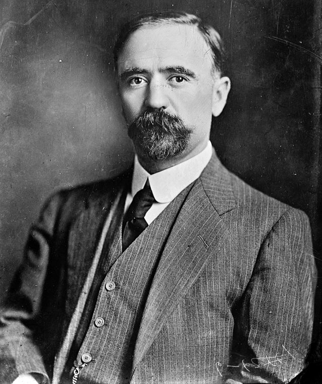
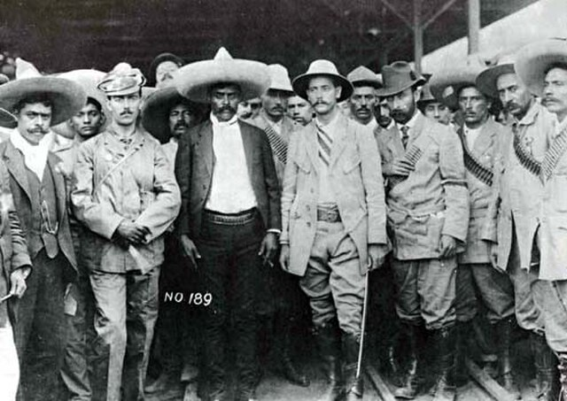

⟵
Revolución Mexicana
Causas de la Revolución Mexicana
Inicio de la Revolución

Golpe de Estado de Victoriano Huerta
Lucha contra el régimen de Huerta
División entre revolucionarios
Constitución de 1917
Personajes clave de la Revolución

Papel de las mujeres en la Revolución
Consecuencias de la Revolución Mexicana
El fin de la Revolución